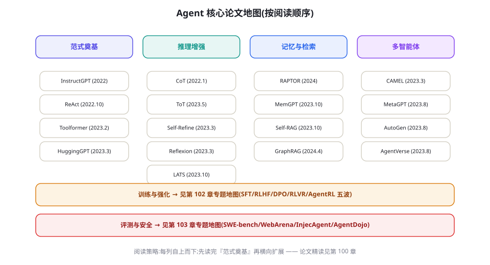

附录 D：参考资料总目
全书引用的论文、工程资料、框架与数据集的总索引，按主题分组、按重要性排序。带 ★ 的是「如果只读十篇」级别的必读。各条目对应的精讲章节用 → 标注。百篇前沿清单的完整版在第 104 章，本目录不重复收录，只做总目。 使用本目录的正确姿势：先按主题找到你的目标分组，用「一句话定位」判断相关性，点进 arXiv 链接核对原文，最后按「精讲」列回到对应章节看全书如何使用它——目录、原文、章节三点一线，才是参考资料的正确打开方式。全目录共 70+ 条目，其中带 ★ 的 10 条构成了本领域的公共语言。

一 · 奠基论文（范式级）
| 文献 | 一句话定位 | 精讲 |
|---|---|---|
| ★ Vaswani, A. et al. (2017). «Attention Is All You Need». NeurIPS. arXiv:1706.03762 | Transformer 架构，一切的地基 | → Ch4 |
| ★ Brown, T. et al. (2020). «Language Models are Few-Shot Learners». NeurIPS. arXiv:2005.14165 | 上下文学习涌现（GPT-3） | → Ch3/6 |
| ★ Wei, J. et al. (2022). «Chain-of-Thought Prompting Elicits Reasoning». NeurIPS. arXiv:2201.11903 | 思考外置的开端 | → Ch6 |
| ★ Ouyang, L. et al. (2022). «Training language models to follow instructions with human feedback». NeurIPS. arXiv:2203.02155 | RLHF 工业化（InstructGPT） | → Ch40 |
| ★ Yao, S. et al. (2022). «ReAct: Synergizing Reasoning and Acting in Language Models». ICLR 2023. arXiv:2210.03629 | Agent 基本范式 | → Ch16 |
| ★ Schick, T. et al. (2023). «Toolformer: Language Models Can Teach Themselves to Use Tools». arXiv:2302.04761 | 自监督工具使用训练 | → Ch44 |
| ★ Shinn, N. et al. (2023). «Reflexion: Language Agents with Verbal Reinforcement Learning». NeurIPS. arXiv:2303.11366 | 语言化自我反思 | → Ch22 |
| ★ Yao, S. et al. (2023). «Tree of Thoughts: Deliberate Problem Solving with LLMs». NeurIPS. arXiv:2305.10601 | 搜索进入 LLM 推理 | → Ch18/93 |
| ★ Packer, C. et al. (2023). «MemGPT: Towards LLMs as Operating Systems». arXiv:2310.08560 | 记忆分页的操作系统隐喻 | → Ch19 |
| ★ DeepSeek-AI (2025). «DeepSeek-R1: Incentivizing Reasoning Capability in LLMs via Reinforcement Learning». arXiv:2501.12948 | RLVR 范式完整开源 | → Ch43 |
二 · 核心机制论文
本组覆盖 Agent 的四大机制方向：编排与推理、记忆与检索、反思与改进、多智能体协作。读法建议：先读两篇综述建立坐标系，再按机制方向各精读两篇代表作——注意 Generative Agents（记忆流）与 MemGPT（记忆分页）是两种截然不同的记忆设计哲学，对照读收益最大。
| 文献 | 一句话定位 | 精讲 |
|---|---|---|
| Wang, L. et al. (2023). «A Survey on LLM based Autonomous Agents». Front. Comput. Sci. arXiv:2308.11432 | 最常被引的 Agent 综述 | → Ch14 |
| Xi, Z. et al. (2023). «The Rise and Potential of LLM Based Agents: A Survey». arXiv:2309.07864 | 另一篇高引综述，视角偏社会科学 | → Ch14 |
| Park, J. et al. (2023). «Generative Agents: Interactive Simulacra of Human Behavior». UIST. arXiv:2304.03442 | 斯坦福小镇：记忆流 + 反思 + 规划的经典组合 | → Ch19 |
| Madaan, A. et al. (2023). «Self-Refine: Iterative Refinement with Self-Feedback». NeurIPS. arXiv:2303.17651 | 自我改进循环 | → Ch22 |
| Shao, Z. et al. (2023). «Enhancing Retrieval-Augmented LLMs with Retrieval-Augmented (Self-RAG)». arXiv:2310.11511 | 自反思检索 | → Ch21 |
| Gao, Y. et al. (2023). «Retrieval-Augmented Generation for LLMs: A Survey». arXiv:2312.10997 | RAG 全景综述（Naive/Advanced/Modular） | → Ch20 |
| Edge, D. et al. (2024). «From Local to Global: A GraphRAG Approach to Query-Focused Summarization». Microsoft. arXiv:2404.16130 | 图谱化全局 RAG | → Ch21 |
| Qian, C. et al. (2023). «Communicative Agents for Software Development (ChatDev)». ACL 2024. arXiv:2307.07924 | 角色化多智能体软件开发 | → Ch24 |
| Hong, S. et al. (2023). «MetaGPT: Meta Programming for Multi-Agent Collaborative Framework». ICLR 2024. arXiv:2308.00352 | SOP 化多智能体 | → Ch33 |
| Wu, Q. et al. (2023). «AutoGen: Enabling Next-Gen LLM Applications». arXiv:2308.08155 | 群聊式多智能体框架 | → Ch31 |
| Li, J. et al. (2023). «CAMEL: Communicative Agents for "Mind" Exploration». NeurIPS. arXiv:2303.17760 | 角色扮演式双 Agent 协作 | → Ch24 |
| Besta, M. et al. (2024). «Graph of Thoughts». AAAI. arXiv:2308.09687 | 把思维链推广为任意图 | → Ch18 |
| Hao, S. et al. (2023). «Reasoning with Language Model is Planning with World Model (RAP)». EMNLP. arXiv:2305.14992 | LLM 作为世界模型的 MCTS 规划 | → Ch18/97 |
| Zhou, A. et al. (2023). «Language Agent Tree Search (LATS)». ICML 2024. arXiv:2310.04406 | MCTS + Agent + 自反思统一 | → Ch18/93 |
| Zelikman, E. et al. (2022). «STaR: Bootstrapping Reasoning With Reasoning». NeurIPS. arXiv:2203.14465 | 自举推理（Self-Taught Reasoner） | → Ch42/47 |
| Zhao, W. X. et al. (2023). «A Survey of LLMs». arXiv:2303.18223 | LLM 总体综述（背景补全） | → Ch4 |
三 · 训练与强化论文
本组按「SFT → 偏好优化 → 可验证奖励 → Agent RL → 数据工程」的时间线排列，正是第 38-49 章的叙事线。入门者只需按表序阅读即可获得完整的范式演化脉络；重点提示：GRPO（DeepSeekMath）是理解 2025 年后所有推理模型训练的钥匙，Tulu 3 则是开源世界把全部技术组装起来的样板工程。
| 文献 | 一句话定位 | 精讲 |
|---|---|---|
| Christiano, P. et al. (2017). «Deep RL from Human Preferences». NeurIPS. arXiv:1706.03741 | RLHF 思想源头 | → Ch40 |
| Bai, Y. et al. (2022). «Constitutional AI: Harmlessness from AI Feedback». arXiv:2212.08073 | RLAIF 与宪政对齐 | → Ch42/64 |
| Rafailov, R. et al. (2023). «Direct Preference Optimization (DPO)». NeurIPS. arXiv:2305.18290 | 免 RM 的偏好优化 | → Ch41 |
| Lightman, H. et al. (2023). «Let's Verify Step by Step». ICLR 2024. arXiv:2305.20050 | 过程监督优于结果监督 | → Ch46 |
| Shao, Z. et al. (2024). «DeepSeekMath: GRPO». arXiv:2402.03300 | 组相对策略优化（RLVR 主力算法） | → Ch43 |
| Nakano, R. et al. (2021). «WebGPT: Browser-assisted question-answering with human feedback». arXiv:2112.09332 | 浏览器 Agent + RLHF 早期标杆 | → Ch45/67 |
| Zeng, A. et al. (2023). «AgentTuning: Enabling Generalized Agent Abilities for LLMs». arXiv:2310.12823 | 多环境 Agent 指令微调 | → Ch45 |
| Chen, Z. et al. (2024). «AgentGym: Evolving LLM Agents into Generalist Agents». arXiv:2406.04151 | Agent RL 环境动物园 | → Ch45 |
| Qi, H. et al. (2024). «WebRL: Self-Evolving Online Curriculum RL for Web Agents». ICLR 2025. arXiv:2411.02337 | 自进化课程学习网络 Agent | → Ch45 |
| Wang, G. et al. (2022). «Self-Instruct: Aligning Language Models with Self-Generated Instructions». ACL. arXiv:2212.10560 | 合成指令数据开端 | → Ch47 |
| Xu, C. et al. (2023). «WizardLM: Evol-Instruct». arXiv:2304.12244 | 指令进化 | → Ch47 |
| Patil, S. et al. (2023). «Gorilla: Large Language Model Connected with Massive APIs». NeurIPS. arXiv:2305.15334 | API 检索增强工具调用 | → Ch44 |
| Chen, M. et al. (2021). «Evaluating LLMs Trained on Code (Codex/HumanEval)». arXiv:2107.03374 | 代码模型与评测双奠基 | → Ch51/74 |
| Lambert, N. et al. (2024). «Tulu 3: Pushing Frontiers in Open Language Model Post-Training». arXiv:2411.15124 | 开源后训练全配方（RLVR 纳入） | → Ch38/43 |
| Zhao, A. et al. (2024). «Absolute Zero: Reinforced Self-play Reasoning with Zero Data». arXiv:2505.03335 | 零人类数据自我博弈 | → Ch49 |
四 · 评测与安全文献
评测组回答「怎么度量」，安全组回答「怎么不坏」。两组的读法不同：评测论文重点看「任务构造与判分方式」（这决定了分数的可信度），安全论文重点看「威胁模型与复现成本」（这决定了防御的优先级）。Simon Willison 的博客不属于学术文献，但它是间接注入攻防最完整的公开实况记录。
| 文献 | 一句话定位 | 精讲 |
|---|---|---|
| Jimenez, C. et al. (2023). «SWE-bench: Can Language Models Resolve Real-World GitHub Issues?». ICLR 2024. arXiv:2310.06770 | 编码 Agent 金标准 | → Ch51 |
| Zhou, S. et al. (2023). «WebArena: A Realistic Web Environment for Building Autonomous Agents». ICLR 2024. arXiv:2307.13854 | 可复现真实 Web 环境 | → Ch52 |
| Xie, T. et al. (2024). «OSWorld: Benchmarking Multimodal Agents for Open-Ended Tasks in Real Computer Environments». NeurIPS. arXiv:2404.07972 | 操作系统级基准 | → Ch52 |
| Mialon, G. et al. (2023). «GAIA: a Benchmark for General AI Assistants». arXiv:2311.12983 | 人易机难的通用助手基准 | → Ch53 |
| Liu, X. et al. (2023). «AgentBench: Evaluating LLMs as Agents». ICLR 2024. arXiv:2308.03688 | 八环境综合 Agent 评测 | → Ch53 |
| Yao, S. et al. (2022). «WebShop: Towards Scalable Real-World Web Interaction». NeurIPS. arXiv:2207.01206 | 购物环境 Agent 训练与评测 | → Ch45 |
| Zheng, L. et al. (2023). «Judging LLM-as-a-Judge with MT-Bench and Chatbot Arena». NeurIPS. arXiv:2306.05685 | 裁判模型偏差系统研究 | → Ch57 |
| Shi, F. et al. (2023). «Large Language Models Can Be Easily Distracted by Irrelevant Context». ICML. arXiv:2302.00093 | GSM-IC：无关上下文的干扰 | → Ch9/23 |
| Greshake, K. et al. (2023). «Not what you've signed up for: Compromising Real-World LLM-Integrated Applications with Indirect Prompt Injection». AISec. arXiv:2302.12173 | 间接注入的奠基性攻击研究 | → Ch59 |
| Zhan, Q. et al. (2024). «InjecAgent: Benchmarking Indirect Prompt Injections in Tool-Integrated LLM Agents». ACL Findings. arXiv:2403.02691 | 工具型 Agent 注入基准 | → Ch55/59 |
| Debenedetti, E. et al. (2024). «AgentDojo: A Dynamic Environment to Evaluate Attacks and Defenses for LLM Agents». NeurIPS. arXiv:2406.13352 | 动态注入攻防环境 | → Ch55 |
| Wallace, E. et al. (2024). «The Backbone Breakdown: Broader Impact of Seed Level Attacks» 相关红队方法见 OpenAI/Anthropic 红队报告 | 自动化红队方法论 | → Ch55 |
| Ji, Z. et al. (2023). «Survey of Hallucination in Natural Language Generation». ACM Computing Surveys. arXiv:2202.03629 | 幻觉分类学权威综述 | → Ch9/63 |
| Patwardhan, N. et al. (2023). «From LLM to Conversational Agent: Programmable and Sovereign Human Control (System 2 Attention/Spotlighting 前身研究群)». 相关防御方法见 Simon Willison 注入资料库 | 注入防御实践汇编 | → Ch59 |
五 · 多模态与具身文献
从 GUI 操作到物理机器人，本组展示「感知-行动闭环」在数字与物理两个世界的最新形态。具身部分（RT-2、π0）与数字部分（WebVoyager、AppAgent）的共性是「视觉接地」——SoM 一文是理解两者共同的工程基石。科学发现组（Coscientist、AI Scientist）则把 Agent 推向了「自主提出并检验假设」的最前沿。
| 文献 | 一句话定位 | 精讲 |
|---|---|---|
| Brohan, A. et al. (2023). «RT-2: Vision-Language-Action Models». arXiv:2307.15818 | 网络知识迁移到机器人动作 | → Ch69 |
| Driess, D. et al. (2023). «PaLM-E: An Embodied Multimodal Language Model». ICML. arXiv:2303.03378 | 具身多模态大模型 | → Ch69 |
| Wang, Z. et al. (2024). «Voyager: An Open-Ended Embodied Agent with LLMs». TMLR. arXiv:2305.16291 | Minecraft 技能库自动扩展 | → Ch70 |
| He, H. et al. (2024). «WebVoyager: Building an End-to-End Web Agent with LLMs». ACL. arXiv:2401.13919 | 端到端浏览器 Agent | → Ch67 |
| Yang, J. et al. (2023). «Set-of-Mark Prompting Boosts Visual Grounding in GPT-4V». arXiv:2310.11441 | SoM 视觉标注法 | → Ch67 |
| You, K. et al. (2024). «AppAgent & OS-Copilot 系（移动/OS Agent 代表作）». 相关: arXiv:2312.13771, arXiv:2402.05457 | 手机与 OS 级自动化 | → Ch68 |
| Boiko, D. et al. (2023). «Autonomous Chemical Research with LLMs (Coscientist)». Nature. nature.com | 自主化学实验规划 | → Ch71 |
| Bran, A. et al. (2023). «ChemCrow: Augmenting LLMs with Chemistry Tools». arXiv:2304.05376 | 领域工具增强科学 Agent | → Ch71 |
| Lu, C. et al. (2024). «The AI Scientist: Fully Automated Open-Ended Scientific Discovery». arXiv:2408.06292 | 端到端科研 Agent（含争议） | → Ch71 |
| Bruce, J. et al. (2024). «Genie: Generative Interactive Environments». ICML. arXiv:2402.15391 | 可玩世界模型 | → Ch70/97 |
| Black, K. et al. (2024). «π0: A Vision-Language-Action Flow Model (Physical Intelligence)». arXiv:2410.24164 | 通用机器人基座 VLA | → Ch69 |
六 · 工程资料与协议
本组与论文组的区别是「活文档」：规范与博客会持续更新，且多数出自一线实践者。三篇 Anthropic 工程文章合计不到三小时的阅读量，却是全书被引用密度最高的外部资料——如果你只能从本组选三样，选它们加 MCP 规范。
| 资源 | 定位 | 章节 |
|---|---|---|
| ★ Anthropic. «Building Effective Agents» (2024) / «Effective context engineering for AI agents» (2025) / «How we built our multi-agent research system» (2025) | 一线工程实践三连，全文免费 | Ch14/23/24 |
| ★ OpenAI. «A practical guide to building agents» (2025) / Cookbook 与 Assistants/Agents SDK 文档 | 官方工程指南 | Ch26/29 |
| Model Context Protocol 规范与服务器仓库. modelcontextprotocol.io · github.com/modelcontextprotocol | 工具互操作标准 | Ch36 |
| A2A 协议. github.com/google-a2a/A2A | Agent 间互操作标准 | Ch37 |
| LangGraph 文档. langchain-ai.github.io/langgraph | 状态图编排事实标准 | Ch28 |
| OpenTelemetry GenAI 语义约定. opentelemetry.io | 观测标准化 | Ch79 |
| Simon Willison 博客（prompt injection 专栏）. simonwillison.net | 注入攻防最持续的公开记录 | Ch59 |
| Lilian Weng 博客. lilianweng.github.io（«LLM Powered Autonomous Agents» 2023） | 机制综述经典长文 | Ch14 |
| HuggingFace Smol Course / Agents Course. huggingface.co/learn | 免费实操课程 | Ch108 |
| Stanford CS329A / Berkeley LLM Agents MOOC 等课程清单 | 系统课程 | Ch108 |
七 · 框架、数据集与基准仓库
本组全部是可克隆、可运行、可贡献的仓库。选型框架前先读第 26 章决策树；跑基准前先读对应章节的「榜单解读」小节——脱离语境的分数是这个领域最常见的误导形式。
| 仓库 | 定位 | 章节 |
|---|---|---|
| langchain-ai/langgraph | 图状态机编排 | Ch28 |
| openai/openai-agents-python | 轻量官方 Agent SDK | Ch29 |
| anthropics/claude-agent-sdk-python（及 claude-code） | Claude 生态 Agent 开发 | Ch30 |
| microsoft/autogen（AG2 分支） | 多智能体群聊框架 | Ch31 |
| crewAIInc/crewAI | 角色驱动团队 | Ch32 |
| FoundationAgents/MetaGPT | SOP 多智能体 | Ch33 |
| run-llama/llama_index | 数据框架 | Ch34 |
| langfuse/langfuse · Arize-ai/phoenix | 开源可观测性 | Ch79 |
| princeton-nlp/SWE-bench | 编码基准 | Ch51 |
| web-arena-x/webarena · xlang-ai/OSWorld | Web/OS 基准 | Ch52 |
| gaia-benchmark/GAIA（HuggingFace）· OSU-NLP-Group/AgentBench | 通用 Agent 基准 | Ch53 |
| ShishirPatil/gorilla（含 BFCL） | 工具调用评测 | Ch54 |
| ethz-spylab/agentdojo · uiuc-kang-lab/InjecAgent | 注入安全评测 | Ch55 |
| ollama/ollama · vllm-project/vllm | 本地推理 | Ch11/88 |
八 · 七条主题阅读路线
按目标选路线，每条 6-10 篇，均可在一个周末到两周内完成：
- 路线① 入门全景：ReAct → Agent 综述（2308.11432）→ Building Effective Agents → Lilian Weng 博客 → Toolformer → GAIA 论文 → 本附录 D-6 表。目标：建立全景词汇表。
- 路线② 记忆与 RAG 深耕：RAG 综述 → MemGPT → Generative Agents → Self-RAG → GraphRAG → Lost in the Middle → Effective context engineering。目标：能设计生产级记忆架构（对应 Ch19-23）。
- 路线③ 推理与规划：CoT → ToT → RAP → GoT → LATS → Let's Verify Step by Step → DeepSeek-R1。目标：理解搜索与验证两条主线（Ch18、Ch43、Ch93）。
- 路线④ 训练全景：RLHF（InstructGPT）→ Constitutional AI → DPO → Self-Instruct → AgentTuning → AgentGym → WebRL → Tulu 3。目标：能设计 Agent 训练方案（Ch38-49）。
- 路线⑤ 评测方法论：SWE-bench → WebArena → OSWorld → GAIA → AgentBench → MT-Bench（LLM-as-Judge）→ 你自建评测的章末清单（Ch56）。目标：能搭建可信评测体系。
- 路线⑥ 安全纵深：间接注入（Greshake）→ InjecAgent → AgentDojo → Simon Willison 注入专栏 → Constitutional AI → 幻觉综述。目标：能做威胁建模与红队（Ch55、58-65）。
- 路线⑦ 前沿雷达：表 D-5 全部 + 第 104 章百篇清单按月追踪。目标：保持前沿敏感度而不被噪声淹没。
路线之外的检索姿势：用 Connected Papers 从任何一篇出发做相似图扩展；用 Semantic Scholar 的「被引」筛选里程碑；每篇先读摘要与图表，再决定是否全文——第 99 章的三遍读法。
九 · 维护这份总目的两条原则
原则一：只收读过并验证过的文献。本目录的每一条都对应本书某章的实际引用，收录标准是「作者团队真的读过并用于论证」，而不是「看起来相关就堆进来」。Agent 领域每月新增数百篇 arXiv 论文，一份「什么都收」的清单等于什么都没说——筛选本身才是价值。第 104 章的百篇清单遵循同一纪律：宁缺毋滥，每篇配一句我们自己的导读而非摘要机翻。
原则二：标注时效与置信。本目录不标注「影响力分数」之类的伪精确指标，但在各章正文中，我们会明确区分「论文证明了什么」与「社区相信了什么」。例如 Reflexion 的原始基准成绩（HumanEval 91%）在后续复现中存在方差，本书引用时会注明；这种诚实会让目录随时间变得愈来愈可靠，而非愈来愈像宣传册。读者发现条目与原文不符时，请优先信原文，并给我们提 Issue。
本总目与全书章节的参考文献区保持同步：各章引用以其章节内列表为准，本目录提供跨主题检索视角。链接失效或条目遗漏，请提 Issue（格式：[Ref] 条目 · 问题）。逐月前沿论文追踪见第 104 章的百篇清单。
本章小结
- 十篇奠基论文是全领域的公共语言，先读它们再分支。
- 五大主题分册：机制 / 训练 / 评测安全 / 多模态具身 / 工程资源，各配「一句话定位」。
- 本目录是索引不是教材：每条都应带着对应章节的机制理解去读原文。
延伸自测
- 只读十篇的名单里，你已读过几篇？为最近没读的三篇各排一个阅读窗口。
- 挑一篇你读过的论文，检查本书给它的一句话定位是否准确——这是最好的阅读检验。
- 为你所在行业补充 2 条本目录没有的资源条目，并给出「一句话定位」。
参考文献
- 全部条目已内联于上文各表；原始链接以论文官方 arXiv 页面与项目官方仓库为准。
- Semantic Scholar (semanticscholar.org) / Connected Papers (connectedpapers.com) / arXiv-sanity (arxiv-sanity-lite.com) 是本目录的动态补充工具（用法见第 99 章）。
- 各表所列论文的官方代码仓库，一律以论文页面的 Code 链接为准；本书不镜像、不二次分发。
- 中文读者可配合机器翻译阅读英文论文，但公式与实验表格务必看原文——翻译在数字与符号上最容易失真（第 99 章阅读方法论）。
- 引用格式转换：本目录统一为「作者 (年份). «标题». venue. arXiv 编号」，写入你自己的文献管理器时可用 Zotero 的 arXiv 抓取。